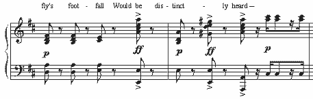
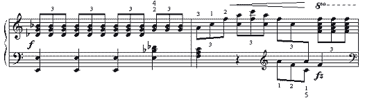
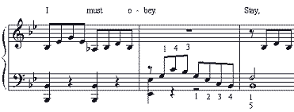
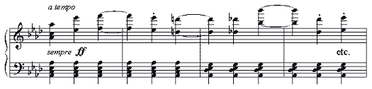

You are here: > > Schirmer Errata
by
Key to measure indications: A/B/C = Page/System/Measure
L.H. = Left hand (piano part)
R.H. = Right hand
Note: I cannot guarantee that this list is fully comprehensive, but I fancy I've caught — well, nearly all of the most glaring errors in the score!
With a few exceptions, I have not paid attention to the dialogue. This list covers mainly the music and lyrics.
Steven Lichtenstein, Editor
VOCAL ERRATA:
15/2/2: Most versions of the libretto have "indenture" instead of"indentures."
16/1/3: No comma after "Two-and-twenty."
45/4/2: Frederic's second note should be C (one step higher than printed)
52/2/7: Mabel's dotted half-note is missing the dot.
69/4/2: Basses should have a C on the fourth beat (on "di-" of"divinity," as at 109/4/2).
70/1/1: Girls should sing B on the third syllable of "opportunity" (as the Pirates did two pages earlier), rather than the written D.
72/3/2: Samuel's first eighth-note should be dotted.
86/1/2: Last eighth-note in the chorus is printed a third low; notes should be G and Bb, not E and G.
107/3/1: Ruth's "you" should be a third lower (F, not A).
118 (dialogue): Major-General's line: "I CAME here to humble myself," etc. should probably be "I COME here," etc. (most libretti have "come," only First-Night G&S has "came")
136/2/2: Traditional interpolation: "Damme, you DON'T go!"
138/4/1: Note: Chappell omits "of" (an error on Gilbert's part). Schirmer correctly interpolates it.
141/3/4: Preferable variant text: "With quip and quibble quaint."
142/4/3: PK's verse: This "this" should be "that" (to match the beginning of his phrase).
143/2/3: Almost every libretto, score and recording has its own version of whether the text should be "This paradox," "That paradox" or "A paradox" here. The 1953 D'Oyly Carte recording with Peter Pratt as the MG (which I am used to!) gives, in my opinion, the best solution: Everyone says "A paradox" the first time (to match the rest of the refrain) and "That paradox" the second time (to match the PK's verse). Of course, Schirmer's use of "this" in the first verse does match Ruth's "this" in her refrain, so that is equally logical. As long as all three singers agree on how they are doing it, and it makes good sense, I suppose anything is permissible, unless someone can definitively state which is correct (and Gilbert and Sullivan themselves may not have ever officially agreed on this).
143/3/1: Ruth's note should be B (a third lower than printed).
144/3/2: "February" is incorrectly syllabified. "Febru-" should be intoned on the A, "-ary" on the G#.
145/3/2: Frederic: second note should be D (a third higher than written).
148/1/3: Chappell has "THAT curious paradox" (also at 148/2/3). 1953 DOC recording also has "THAT paradox" at 148/1/3, but ends with"A... paradox" at 148/2/3.
155/2/2: Frederic's first note should be an eighth-note, not a quarter (as in 155/3/1).
157/3/2: The rhythm is faulty in this measure. It should be intepreted thus: Four sixteenth-notes on "terrible dis-" eighth and two sixteenths on "-closure has" two eighths and a quarter-note on"just been made."
158/2/1: "But you ARE twenty-one!" (an exclamation point, not a question mark)
170/1/3: The textless E half-note in the Sergeant's line is an aberration. Away with it — erase it from the bar!
172/1/4: A whole note on E should be given to the Police instead of an empty measure. (Reported by Philip Sternenberg)
172/3/2: Sergeant's monologue should read "...so dear to all" (not"so dear to us all"). Also, from "It is most distressing" onward, it
is traditional to have the Sergeant chant the lines on the same E
note as the Chorus, apart from the words "the force," which are sung
on C# (a third lower) for "the" and C# slurring up to D# on "force,"
in the manner of the Collect in the Anglican communion liturgy. (My
thanks to Alex Scutt for explaining the latter detail.)
175/3/1-2: Traditionally, in the second verse the Sergeant pronounces it "not a nappy one," and the chorus interpolates a second-space C on the second beat, sliding up to the Bb on the third beat.
178/2/1: Chappell and "First-Night G&S" have "General Stanley told" instead of "General Stanley's told."
184/3/2: The Pirates' last note should be D (as at 184/3/3).
192/2/3: Chappell has "e'er" instead of "ever" (dotted-quarter note). Sullivan may have altered Gilbert's text here for musical reasons.
196/1/2: "His life is over" (Pirate King's line) is generally omitted.
203/1/2-3: Police "our" should be "their," and "we" should be"they."
PIANO ERRATA:
3/4/1: L.H.: Second and third beats should be phrased together; connected quarter-notes, not eighth-notes separated by eighth-rests.
5/4/3: L.H., next-to-last eighth-note: C should change to Db here, rather than one eighth-note later.
8/3/3: R.H.: Last note should be B (a third lower than printed).
10/6/3: R.H.: Last note should be E (a third lower than printed).
13/3/2: Ab in first beat (R.H.) should be G.
22/2/2: Top note of final R.H. chord should be F, not G.
34/3/3: The 8va is misleading and unnecessary; the orchestration of this figure does not change, so there is no reason to play those two figures an octave higher.
41/1/3: Second eighth-note in R.H. should be Ds (as at 41/1/1), not Fs.
55/1/1: There should not be an 8va mark in the R.H.
70/2/3: Chord in 4th beat (R.H.) should have an E instead of a C#.
The C# appears at the equivalent measure in the Pirate's verse (and
also in the Act One finale), but the Chappell edition has an E here;
and both Chappell and Schirmer have an E in the equivalent Girls'
Chorus at 110/2/4. Musically the E is a better choice, since the
chorus has the C#. The E fills in the missing harmony, rather than
doubling the third.
94/1/3: L.H. second chord: B should be A.
96/1/4: Third chord in R.H., bottom note: B should be A.
113/4/6: R.H.: There should be no 8va on the final chord. L.H.: The low G should be doubled 8va basso (one ledger line is printed below the staff, but the note itself was omitted).
114/2/1: Grace note missing in R.H. (Ab before 4th beat, as at 114/3/1).
114/5/3: Second beat is missing in L.H. (should be an eighth-note G on top of treble clef).
132/2/2: L.H. should descend (G-F-E-D), as at 121/4/2.
142/2/2: The last eighth-note in the R.H. should have an F double-sharp, not F#.
157/4/1: The last four eighth-notes in the R.H. should be the same as the first four (all A7 chords).
180/4/2-3: Notably left out of the score are the following fortissimo chords:

Same corrections at 185/2/3 and 185/3/1.
184/4/3: The first beat of this measure should be marked piano in the piano part, and the chord should be the same as in the second and third beats (thus the only fortissimo in the measure is on the fourth beat).
203/2/3: L.H. should have a third-line D on the first beat (quarter-note followed by a quarter rest).
204/2/2: Chord on third beat should have an E-natural instead of Eb.
204/2/4: R.H. is missing an 8va sign (included in Chappell). And large-handed pianists should resolve the left hand properly: Bb-F-D (bottom to top).
Suggestions for improving the piano part
(not as vital as items listed previously, but good to include if
possible):
15/3/3: Third-beat chord in R.H. might as well have an F in the middle (as at 16/3/3).
16/1/2: Winds sustain in this bar (play dotted-half Eb/G in R.H.).
46/1/3: The melody should be doubled an octave higher on "his unfortunate position" (also in 48/2/1).
46/3/2: The eighth-note accompaniment should continue in this measure in the L.H. (also in 48/3/3).
61/5/5: L.H.: The bass line should be doubled 8va basso for the last three measures of the page.
108/2/2: R.H. ascending pattern should be A-C-D-A / Bb-D-G-Bb for four bars (no eighth-rests).
108/3/3: R.H. eighth-rest should be an A (2nd space).
120/2/1: First note in L.H. should be sustained (probably a half- or whole-note; definitely not an eighth-note).
127/2/2: The triplet passage in the first three beats is wholly inaccurate, though not actually harmful to use in rehearsal. However, I offer this transcription, which is more faithful to the orchestral score:

160/1/4: Again, the R.H. is completely wrong, though (again) it's not a really serious problem. Still, for the record, the notes should be:

172/1/2: The E whole note in the LH is scored for the cello, but generally not played. It's probably intended as an aid to the choristers in finding the note. Fine to use in rehearsal, of course, but best to leave it out in later stages of rehearsal, unless the music director plans to have the cello play it in performance. (Thanks to Paul Ensell for informing me of the orchestral detail.)
202/2/2: L.H.: Better to double the Cb 8va basso, and omit the third-space Eb on the fourth beat.
204/1/3: Add 8va basso in L.H. on repeat of "They are all noblemen who have gone wrong!"
213/1/6: Left-hand accompaniment in this and the next seven bars
should NOT be "oom-pah-pah." All beats have equal weight, and should
include the bass note (Ab).
I suggest the following arrangement:

213/3/2: L.H.: The extra Eb on the second beat of this and the next bar may be easily omitted with no loss to the general effect.
|
Page Created 20 August, 2011